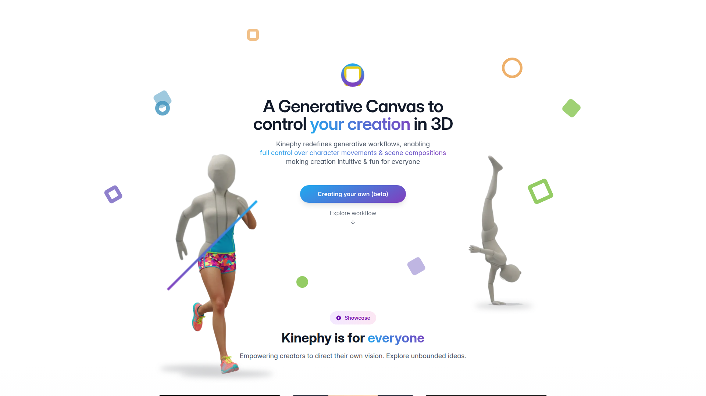

AI 物理驅動的動畫生成平台，用 generative AI + 物理模擬產生互動感知的全身動作。
| 開發者 | Kinephy |
|---|---|
| 類型 | 雲端 AI 動畫生成平台 |
| 價格 | $15/月起（180 秒額度） |
| 官網 | kinephy.ai |
動畫檔案（具體格式待確認），需實際測試平台後確認是否支援 BVH/FBX。
| 優點 | 缺點 |
|---|---|
| 物理感知（有重量感） | 較新，生態未成熟 |
| 互動場景支援 | 輸出格式待驗證 |
| 可編輯輸出 | 雲端依賴 |
| 無需本地 GPU | 額度受方案限制 |
互補定位——Kimodo 是 text-to-motion 基礎動作，Kinephy 加入物理互動層（坐下、攀爬、碰撞反應等）。具體整合路徑需待確認輸出格式。
物理互動動畫的補充來源——基礎動作用 Kimodo，需要環境互動的場景用 Kinephy。